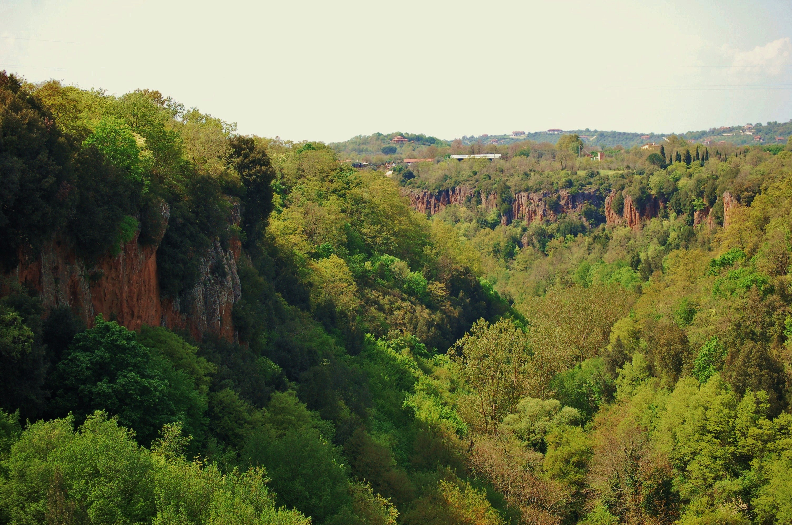

Parco regionale del Marturanum
Il parco regionale Marturanum è un'area naturale protetta situata nel Lazio settentrionale, istituita con la Legge Regionale n.41 del 17 luglio 1984. Occupa una superficie di 1.240 ha ricadente nel territorio del comune di Barbarano Romano nella provincia di Viterbo.

Territorio
Il territorio è stato modellato dall'attività vulcanica Vicana, le quali colate ignimbritiche, circa 155.000 anni fa, hanno depositato il tipico ‘tufo rosso a scorie nere’ sul preesistente Flysch. L'area è pertanto caratterizzata da grandi valloni tufacei, ricoperti di fitta vegetazione, ove scorrono due principali corsi d'acqua: il Fiume Biedano e il Fiume Vesca. A testimonianza del recente vulcanismo, sono altresì presenti sorgenti termali mineralizzate, abbondanti in ferro.
Fauna
Nelle forre, lungo il corso dei fiumi, sono presenti numerosi mammiferi, tra i quali la volpe, il cinghiale, il tasso, l'istrice, il gatto selvatico, la puzzola europea, la nutria. La presenza d'acqua e la scarsa frequentazione umana consentono la sopravvivenza di numerosi anfibi, tra i quali la rara salamandrina dagli occhiali. Tra i volatili si annoverano: l'usignolo di fiume, il luì piccolo, la ghiandaia marina europea, il martin pescatore comune e la cicogna nera. Nel parco nidificano inoltre diverse specie di rapaci notturni e diurni, fra tutti si citano: il lanario, il biancone, il nibbio reale, lo sparviere comune, il gheppio e il falco pellegrino. Nell'area centro meridionale del parco, caratterizzata da prato pascolo, si incontrano di frequente animali allevati allo stato brado, quali vacche e cavalli di razza maremmana.